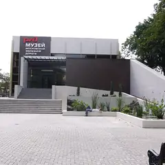

Лионский бушон · ЦАО
Тот ещё гусь
Ресторан в традиции лионских бушонов от создателей бара «Номер 15».
- ₽₽ · 1 500–3 000 ₽ на человека
- в 1 плане
Позвать сюда: Тот ещё гусьОткрыть в каталоге: Тот ещё гусьМаршрут до места: Тот ещё гусь
Адрес и детали
- Адрес
- Валовая ул., 26
Открыть на Яндекс Картах (в новой вкладке) - Метро
- м. Добрынинская
- Округ
- Центр (ЦАО)
- Цена
- 1 500–3 000 ₽ на человека
- Часы работы
- пн–чт 12:00–24:00; пт 12:00–01:00; сб 13:00–24:00; вс 14:00–23:00 · проверили в октябре 2026
- Телефон
- +7 (916) 622-50-96
- Проверено
- работает — проверили в октябре 2026
Планы с этим местом 1

- Музей Московской железной дороги · Музей · м. Павелецкая
- 16 минут пешкомТот ещё гусь · Лионский бушон
Траурный поезд Ленина и паровозы, а потом лионский бушон «Тот ещё гусь».
Открыть план: Паровозы на ПавелецкойПозвать сюда: Паровозы на Павелецкой
Фото: Harveyqs, CC BY-SA 3.0 · Wikimedia Commons
Похожие рядом
Что ещё рядом
Как позвать
- Выбери план, место или событие — в карточке адрес, цены и маршрут в Яндекс Картах.
- Нажми «Позвать сюда» — соберётся приглашение-игра для свидания или голосование для компании.
- Отправь ссылку в любой мессенджер: тебе ответят, а компания отметит, куда и когда может. Бесплатно и без регистрации.